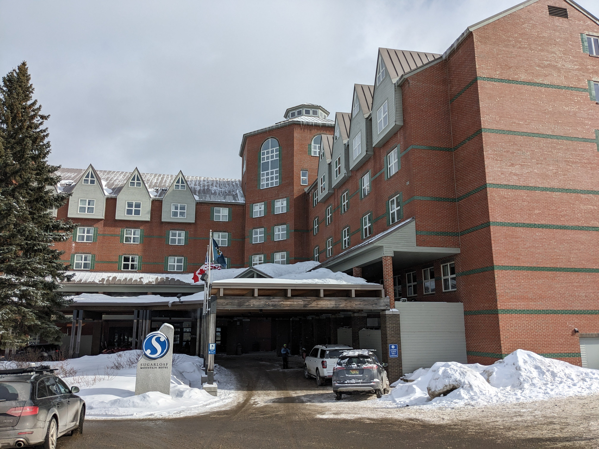
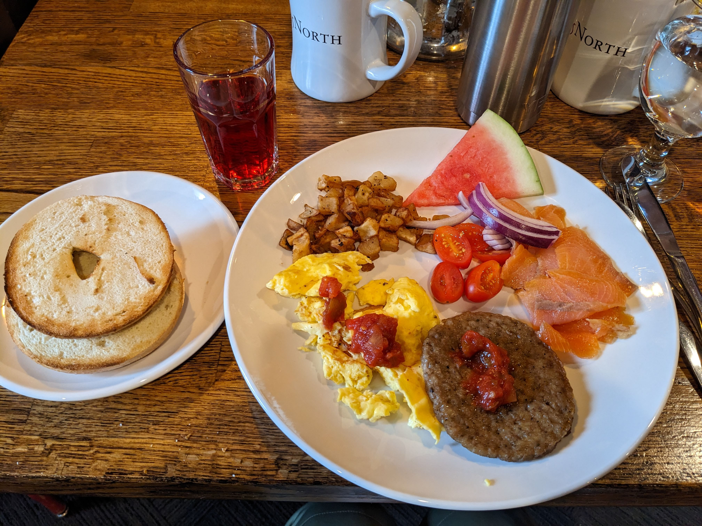
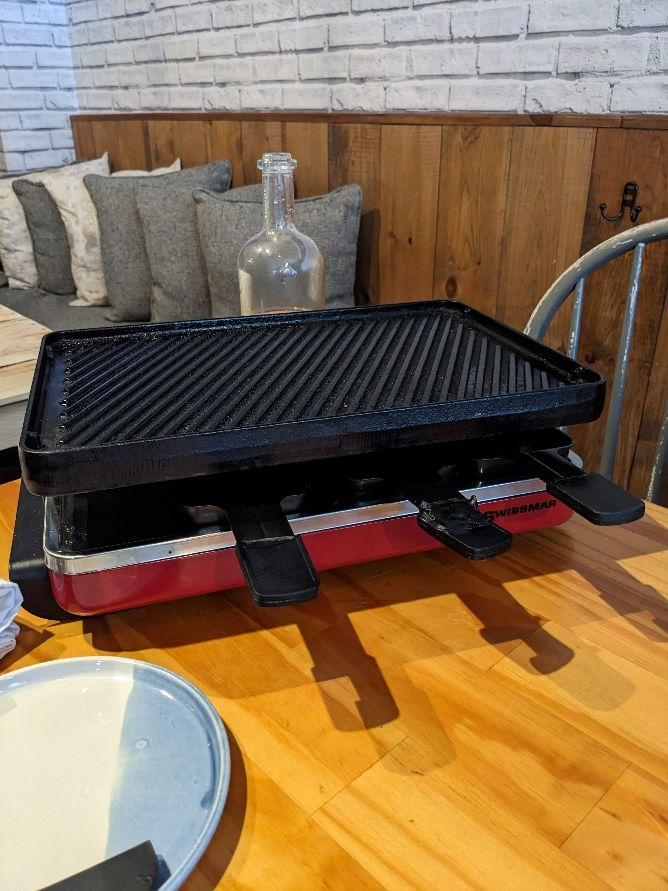
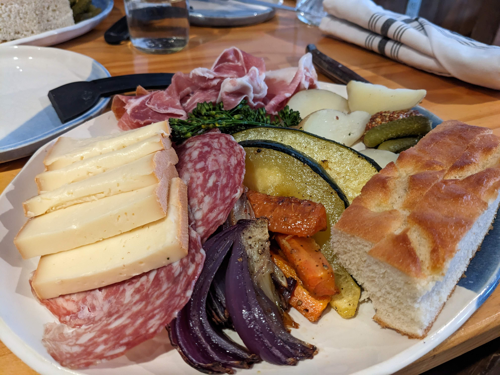

1. はじめに
50歳近くになって再び始めたスキーですが、去年は大雪に見舞われ、スキー場にたどり着けないまま引き返してしまいました。今年は去年の分も取り戻すつもりで、2泊3日のスキー旅行を計画しました。
2. Sugarloaf Ski Resort
行ってきたのは Sugarloaf という、メイン州のスキー場です。ボストンから車で4時間半くらいかかりました。ガリガリな雪は嫌だという家族の意見を取り入れ、カナダにほど近い Sugarloaf まで遠征しました。運転手はいつも私一人です。。。
宿泊したのは Sugarloaf Mountain Hotel という、Sugarloafで一番良さそうなホテルです。ホテルからリフトまでスキーを担いで歩いていけます。予約したのは1ヶ月ほど前でしたが、無事にQueenベッドが2つある部屋を取ることができました。

初日は午後1時過ぎに到着したのですが、なんとホテルのチェックインは夕方5時からということで、さんざん待たされました。普通は3時くらいにはチェックインできるのですが、しっかり5時まで待ちました。リフトは4時前に止まったしまうので、初日に滑る計画はそもそもいまいちだったことがわかりました。テンションが下がりまくりです。
車内で待つこと4時間弱、チェックインした時には長距離ドライブやスキーとは別な意味で疲れ切っていました。スキー場ホテルのレストランには期待していなかったので持ってきたレトルトカレーを食べました。無印良品のカレーとサトウのごはんが妙に美味しく感じました。
3. 二日目
ホテルは朝食付きのプランでした。ビュッフェ形式ですが飲み物だけは持ってきてくれます(チップも払います)。アメリカのホテルにしては美味しい方でした。スキーをレンタルしてリフトに着いたら既に9時を過ぎていました。

雪質は北海道ほどのパウダースノーではありませんが、ボストン近郊の人工雪スキー場と比べるとだいぶ良い感じです。ジャリジャリするところはほんの一部しかありませんでした。寒いですからね。この日も最低摂氏-20~最高-10度くらいでした。
しばらく滑った後、ホテルの部屋に戻ってカップヌードルの昼食です。スキー場の高くてまずいバーガーやサンドイッチよりずっと美味しいです。
しばらくふもと付近の初級者コースを滑った後で、もう少し上の方の初級者コースに挑戦したのですが、案内板が不親切過ぎて中級者コースに紛れ込んでしまい、大変な目に遭いました。柱が立っていてコース取りが不自由な上に、一番急な斜面の雪がなぜかそこだけジャリジャリなのです。何とか平行移動を駆使して切り抜けました(みっともない)。
私達と同様に初級者の小さな子供が紛れ込んでいたのですが、急斜面を抜けたところで転んでしまい、大泣きして父親に助けられていました。不親切な案内板には困ったものです。
あまりに寒いので、午後2時くらいには早くも家族が音を上げ、今年のスキーはお終いになりました。私個人としては若干物足りなかったのですが、調子に乗って怪我をしたら帰れなくなるので家族と一緒にホテルの部屋に戻りました。
4. レストラン
ホテルにあるメインのレストランは山小屋風でイマイチな感じ(朝食は良かったです)でしたが、もう1件 Alice and Lulu's というおしゃれなワインバーがあって、夕食は用意してきたカレーでなく、そこに行ってみることにしました。
ラクレットが有名らしいので、それを選びました。パルマ産の生ハムがあるよと言われたので家族3人分追加したのですが、量が多かったので、一つをシェアした方が良かったです。デザートにはクレープを頂きましたが、これも含めて全て美味しかったです。スキー場でこんなにレベルの高いディナーが食べられるとは思いませんでした。値段は張りますが、とても満足しました。


5. 3日目
最終日はスキーをせず、後はフリーポートとポートランドでショッピングをして帰るだけです。
心配だったのは車のエンジンがかかって無事に帰宅できるかということでした。というのも、Sugarloafに行く2週間前くらいにボストンに寒波が来て摂氏マイナス20度まで下がったときにエンジンがかからなくなり、日本のJAFに相当するAAA(トリプルエー)のお世話になっていたからです。その日はAAAのロードサービスを依頼してから4時間半くらい待たされたのですが、旅先で何時間も待たされたらと考えるだけで頭がくらくらします。
朝ごはん後、心配なので車を見に行きました。気温は摂氏マイナス18度。案の定、エンジンはかかりませんでした。ホテルに泣きついたところ、jump starterを使ってエンジンをスタートしてくれました。流石です。寒い地域なので、こういったことはよくあるようでした。夕方5時チェックインで下がりまくっていたホテルの好感度でしたが、一気に挽回しました。
その後は予定通りフリーポートに行ってNorth FaceとPatagoniaで来年のスキーシーズンに備えた買い物をし、ポートランドのWhole Foods Marketに寄ってメイン産ビールとはちみつを買って、夕食前に無事帰宅しました。
6. 終わりに
初めて行ったSugarloafスキーリゾートですが、期待していた以上に良かったです。リフトは空いているし、雪質は良いしで、ボストンから車で行けるスキーリゾートとしてはかなり良かったと思います。ぜひともリピートしたいです。